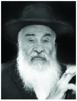

R’ Dovid Chein A”H
He was taught about hospitality even though it entailed great danger. The mitzva of hachnasas orchim penetrated the hearts and souls of the children.

He was born in 5683/1923. His father was R’ Yehuda Chein, a distinguished Chassid in his generation. His childhood years coincided with the early years of Communism, when the new regime worked tirelessly to spread its dogma.
Jewish schools were closed and klei kodesh (lit. holy vessels, i.e. anyone holding a religious position in Jewish life) went underground. Nevertheless, his father invested a lot into his chinuch and was very particular about it.
“I remember that one time I said Modim D’Rabbanan by heart, as children do,” said R’ Dovid. “My father saw this but didn’t say anything. When we got home, he said that he saw me say it by heart and he asked me to say it for him. I knew the first two or three lines and that’s all. Needless to say, from then on I was careful to say it from a Siddur.”
He was taught about hospitality even though it entailed great danger. The mitzva of hachnasas orchim penetrated the hearts and souls of the children. One time, a maggid – an itinerant preacher who made the rounds of the towns to inspire Jews, came to town. His father told his wife that a maggid had come to town and for some reason he had not come to their house.
The next day, little Dovid was walking down the street when he saw a new face. He went over to him and asked in Russian, “Are you the maggid?” The man looked at him in astonishment and said yes, he was.
“So come and stay with us,” Dovid said happily. The maggid didn’t know what made the little boy say this, but he followed him home. When they arrived, Dovid exclaimed, “Mama, I brought the maggid to us!”
Since they did not want the children to attend the government school, Dovid had to leave home when he was seven. He returned only seven years later.
In his youth, he spent time with the great mashpiim, R’ Nissan Nemenov and R’ Shlomo Chaim Kesselman. Years later he would tell his own firsthand stories about the great Chassidim of the previous generation. He spoke about them with Chassidishe feeling and would sometimes cry when he reminisced about those special men.
During World War II the Chein family had to escape Moscow, and after much wandering they arrived in Kokand, Uzbekistan, not far from Samarkand. The army was looking for deserters and since Dovid Chein was eighteen he had no choice but had himself admitted to a mental hospital. Miraculously, he emerged from there in good health.
The Chein family wandered from one place to the next. At a certain point they had to leave the little town and move to Tashkent. There, he was able to learn from and bask in the presence of a number of Chassidic greats.
The Chein family escaped from Russia after the war with many others. It was the eshalon that left on the Chag Ha’Geula of 19 Kislev 5707/1947.
After further stops along the way, R’ Dovid arrived in Eretz Yisroel where he was one of the founders of Kfar Chabad. That is where he built his home with his wife a”h. They opened their home to all in need and were very involved in the chinuch and care of children in dire circumstances.
He was one of the pillars of Kfar Chabad. He was appointed as the secretary of the vaad of Kfar Chabad and did a great deal to develop the village. Everything he did was done with all his heart and soul.
R’ Dovid was a role model of a Chassid of previous generations. He would beseech his listeners to strengthen their inner Chassidic character traits and be role models in the deepest Chassidic sense of the concept.
He passed away after Purim of this year at the age of 90.
Beis Moshiach (staff). "R’ Dovid Chein A”H." Beis Moshiach, no. 874 (March 21, 2013).